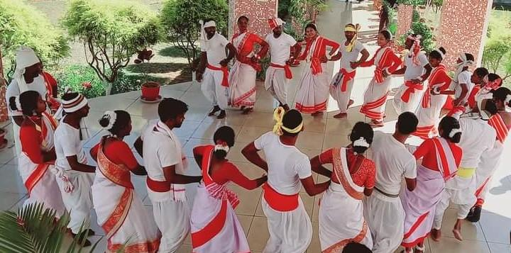

Welcome to Jharkhand!

Jharkhand, located in eastern India, is a state known for its rich tribal heritage, natural resources, and
cultural diversity. The land of forests and hills, Jharkhand's culture is deeply rooted in its tribal traditions,
folk art forms, festivals, and historical landmarks.
Festivals in Jharkhand are vibrant celebrations that highlight the state's cultural diversity and traditional
practices. Sarhul, a spring festival celebrated by tribal communities, marks the beginning of the agricultural
season with prayers to the Earth Goddess. The Tusu Parab festival, dedicated to the deity Tusu, involves singing
traditional songs and offering prayers for a good harvest. Karma Puja, celebrated by Oraon and Munda tribes, is
another significant festival characterized by communal dancing, singing, and rituals.
Jharkhandi cuisine is influenced by its tribal communities and agricultural lifestyle. Rice is a staple food,
often accompanied by dal (lentils), vegetables, and seasonal greens. Dishes like Chhilka Roti (rice flour bread),
Handia (rice beer), and Pittha (dumplings) are popular among locals. The use of locally sourced ingredients and
traditional cooking methods reflect the state's culinary heritage.
Music and dance form an integral part of Jharkhand's cultural expressions. Tribal music genres like Dhols,
Nagaras, and Banam (a string instrument) are used in folk songs that narrate tales of nature, bravery, and daily
life. Dance forms like Chhau, Seraikella Chhau, and Jhumair are performed during festivals and cultural events,
showcasing intricate footwork, vibrant costumes, and rhythmic movements. These cultural practices are passed down
through generations, preserving Jharkhand's unique artistic heritage.
Jharkhand's architectural heritage includes ancient temples, rock art, and archaeological sites that reflect its
historical significance. The Parasnath Hill in Giridih is revered by Jains and features Jain temples dating back
to the 18th century. The Palamau Fort, an ancient fortification in Latehar district, and the rock paintings of
Isko, depicting prehistoric life, are notable examples of Jharkhand's archaeological wealth.
Handicrafts in Jharkhand showcase the artistic skills of its tribal communities, with products ranging from
hand-woven textiles (such as Tussar silk sarees) to bamboo and woodcrafts. Dokra metal craft, known for its
intricate designs and traditional methods of casting, is a highlight of Jharkhandi handicrafts. Artisans in
regions like Hazaribagh and Dumka create unique artworks that blend tradition with contemporary designs,
contributing to the state's cultural heritage and rural economy.
Natural beauty is abundant in Jharkhand, with lush forests, waterfalls, and wildlife sanctuaries offering scenic
landscapes and eco-tourism opportunities. The Betla National Park, renowned for its tiger population and diverse
flora and fauna, attracts nature enthusiasts and wildlife photographers. Rivers like Subarnarekha, Damodar, and
Mayurakshi provide picturesque settings for boating, fishing, and picnicking, adding to the state's natural charm.
In conclusion, Jharkhand's culture is a tapestry of tribal traditions, festivals, cuisine, music, dance,
handicrafts, and natural beauty. Its deep-rooted heritage and artistic expressions make it a fascinating
destination for travelers seeking to explore India's tribal culture and experience the serenity of its natural
landscapes.